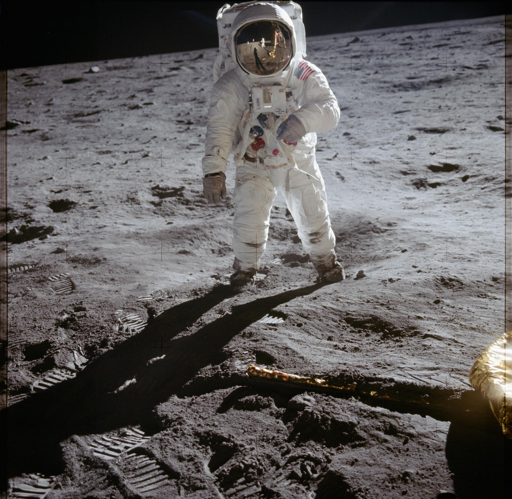

Data layers
Relief ×2. Rover not to scale.
Time and energy use placeholder rover numbers. Distance and slope come from the terrain data.

Suit telemetry simulated
- EVA elapsed
- 0:00 h
- Breathing
- 13 /min
- Heart rate
- 78 bpm
- Oxygen
- 96.0 %
- Suit battery
- 91.0 %
Expected at end of traverse
- Oxygen left
- – %
- Round trip on foot
- – h
- Rover battery left
- – %
- Radiation dose
- – mGy
Along the route
| Slope ° | Elevation m | Ground (TI) | Air temp °C | Pressure Pa | Radiation mGy/day | Oxygen use % |
|---|
Risk
Safe
Scout rover · our own design
Six driven wheels on rocker-bogie arms, a camera arm at the front.
- Width × length × height
- 561 × 823 × 685 mm
- Wheel diameter, width
- 125, 70 mm
- Ground clearance
- ≈ 230 mm
- Slope limit, safe limit
- 30°, 15°
For scale: Opportunity on Mars
- Driving speed
- 3.75 cm/s
- With hazard avoidance
- 30 m/hour
- Slope not recommended above
- 30°
Dimensions are read from the team's CAD model, which is what you see turning here. Mass, speed and battery are not final, so route times and energy use placeholders.
A 12.5 cm wheel is stopped by rocks no orbiter can see. That is why the rover goes first.